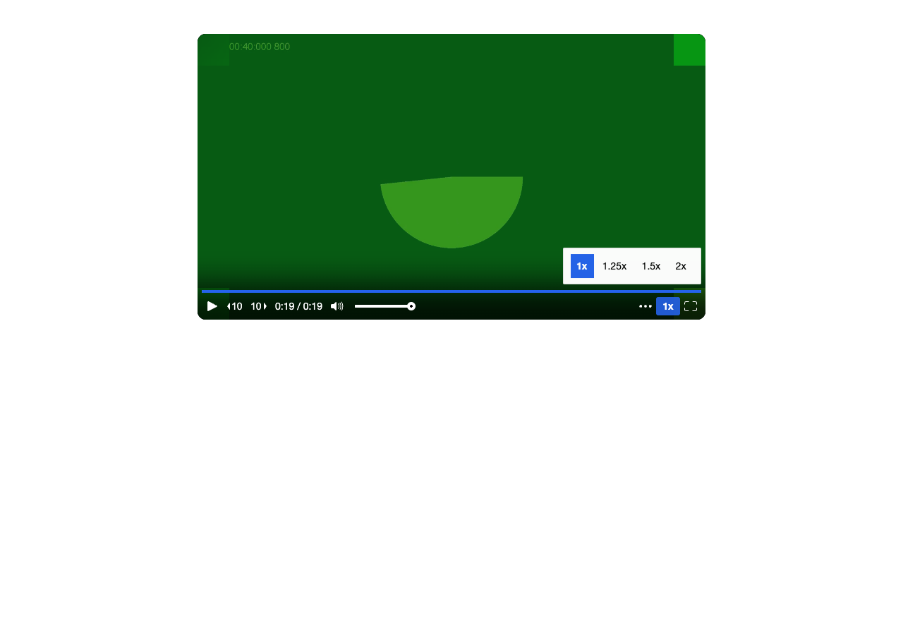

Partial pass. Recording, playback, sharing, statistics and deletion work. Trim reset could not be completed; mobile controls and trim duration have problems. Used visible, headed Playwright Chromium with fake camera/microphone on https://staging.clarity.video. No source files changed. Timings: recorded 45 seconds. After Stop, saved preview was playing by 15.9 s; library poster was observed at 31.1 s and library playback at 46.7 s. These include manual inspection/navigation gaps, not exact processing latency. Repeat app playback started in 0.35 s. Corrected trim saved in 1.86 s; playback was confirmed at 17.5 s, also including inspection gaps. 1. Login worked through email, Continue with email, then password and Sign in. The staged form was initially confusing to the automation; no product login failure established. 2. Recorded 45 s of animated fake camera and synthetic microphone noise. The audio meter responded. Stop briefly showed a black preview and “Preparing link…”, followed by “Changes saved” and Copy link. Library displayed 0:45 and a poster. 3. App playback started within two seconds and seeking worked. No visible stall. 4. Dragging trim handles required correction: the first save selected 0–25 s; reopening and cutting roughly 5–25 s produced a 19.997 s clip. Library showed 0:20, public player 0:19. No numeric boundary inputs were visible. 5. Copied the journey URL and opened a separate private context. Desktop playback completed. Blue progress matched the blue play button; speeds were 1/1.25/1.5/2, with no PiP button. No CC button appeared after over a minute and reload; caption toggling remains unverified with synthetic noise. At 390 px playback fit and completed, but speed and time controls disappeared. 6. Statistics showed two viewer sessions, both 100% watched. 7. No reset/restore control was discoverable in Edit, Trim or the video actions. Trim reopened with only the shortened video. Public playback remained about 20 s; restoring 45 s was not achieved. 8. Deleted the video and reloaded. Library count returned from 242 to 241 and the test poster disappeared. The share link became blank, with no player or explanation. Bugs and exact reproduction: - Save a trim, close Edit, reopen Edit > Trim: no reset/restore option; the timeline contains only the shortened clip. - Trim 45 s to 0–25 s, reopen and trim roughly 5–25 s, close/reopen Edit > Trim > Cancel: editor shows 0:15, while library shows 0:20 and public playback lasts about 20 s. - Open the share player at desktop width, then resize to 390 px: speed and elapsed/duration controls vanish; the overflow menu offers quality only. - Delete the video, then reload its share URL: blank white page instead of an unavailable-video message. Screenshot paths, all under .audit/manual-mux-test/: 1. 01-login-form.png, 01-signed-in.png 2. 02-recording-45s.png, 02-after-stop.png, 02-library.png 3. 03-player-open.png, 03-seek.png 4. 04-trim-5-to-25.png, 04-trim-20s-playing.png 5. 05-played-to-end.png, 05-mobile-playing.png, 05-mobile-menu.png, 05-caption-check.png 6. 06-stats.png 7. 07-no-reset-control.png, 07-public-still-trimmed.png 8. 08-library-deleted.png, 08-public-after-delete.png Copied share URL is retained locally in share-url.txt.
